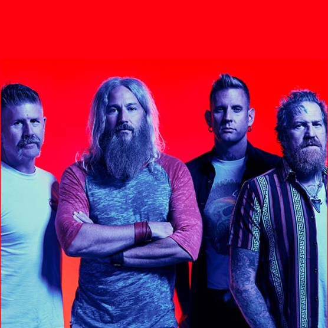
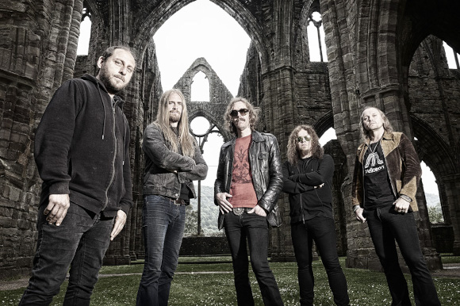
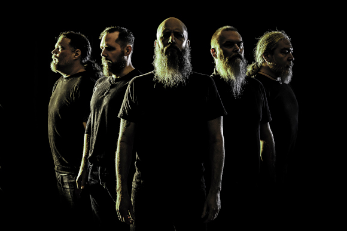
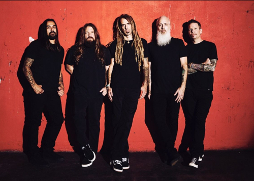

Muitos acham que o rock está morto faz muitos nos. Isso se fala desde o começo dos anos 2000. Porém essa fala está completamente errada quando se fala dos tempos atuais. E é sobre as 5 bandas mais importantes da cena atual, que eu vou falar hoje aqui nesse meu site. Mais, antes de eu mostrar algumas bandas atuais, vou contar um pouco sobre o Heavy Metal.
Como Surgiu o Heavy Metal?
Não existe gênero mais inquieto que o heavy metal. Para comprovar essa afirmação, basta perceber a infinidade de subgêneros em que o estilo se reinventa a cada dia. Desde sua origem, lá em 13 de fevereiro de 1970 - uma sexta-feira 13, diga-se de passagem - com o lançamento do primeiro álbum do Black Sabbath, até o momento em que você está lendo este texto, o metal viu nascer as mais extremas, criativas e curiosas variações. É praticamente impossível listar todos os estilos em um só texto, então vou me ater aos principais gêneros da música pesada, em um guia que serve de porta de entrada para cada estilo. A partir do heavy metal, vários subgêneros evoluíram mais tarde, muitos dos quais são referidos simplesmente como “metal”. Como resultado, o “heavy metal” agora tem dois significados distintos: ou o gênero e todos os seus subgêneros, ou as bandas de heavy metal originais do estilo dos anos 1970, às vezes apelidado de “metal tradicional”, como exemplificado pelas bandas Deep Purple, Led Zeppelin e Black Sabbath – ou as bandas pertencentes à Nova Onda do Heavy Metal Britânico, (NWOBHM, do inglês New Wave of British Heavy Metal), como o Iron Maiden.
Gojira
Gojira é uma banda de death metal progressivo francesa formada em 1996 em Baiona, França. Formado inicialmente com o nome de Godzilla, a banda alterou o nome em 2001. Gojira é composto pelo vocalista, guitarrista e compositor Joe Duplantier, seu irmão mais novo e baterista Mario Duplantier, Christian Andreu como segundo guitarrista, e Jean-Michel Labadie como baixista, formação esta que é a mesma desde que a banda mudou de nome. A banda é conhecida por ter letras que tratam da natureza, espiritualidade, vida e morte. Atualmente o Gojira é uma das principais bandas do metal moderno ao lado de nomes como: Slipknot, Opeth, Lamb of God e Mastodon.
ÁLBUNS DE DESTAQUE
Mastodon

O Mastodon é uma banda de Heavy metal de Atlanta, Geórgia. A banda é uma das mais notáveis bandas na New Wave of American Heavy Metal, tendo influências de groove metal, rock progressivo, hardcore punk, stoner metal e outras. A música do grupo contém riffs pesados, técnicos e complexos, passagens intrincadas e longos e melódicos interludios trechos instrumentais, inspirados pelo amor que a banda tem ao rock progressivo dos anos 70. O grupo lançou sete álbuns de estúdio, bem como diversas gravações ao vivo, EPs e faixas originais para trilhas sonoras.
ÁLBUNS DE DESTAQUE
Opeth

Opeth é uma banda de metal progressivo de Estocolmo. A banda passou por várias mudanças de formação, mas Mikael Åkerfeldt, vocalista, guitarrista e compositor, permaneceu nela desde que entrou imediatamente após a sua criação em 1990.
Seu estilo é enraizado no death metal escandinavo, mas o Opeth tem consistentemente incorporado influências de folk, jazz e blues dentro de suas composições geralmente longas. Muitas composições incluem interlúdios de violão e fortes dinâmicas, bem como ambos vocais gutural e limpo.
A banda lançou seu álbum de estreia, Orchid, em 1995. Realizaram sua primeira turnê mundial após o lançamento de Blackwater Park (2001). Seu oitavo álbum de estúdio, Ghost Reveries (2005), foi bastante popular nos Estados Unidos, mas o grupo não experimentou o sucesso comercial americano até o lançamento de seu nono álbum de estúdio, Watershed (2008), que chegou ao 23.º lugar no top 200 da revista Billboard, e liderou as paradas de álbuns da Finlândia na sua primeira semana de lançamento.
ÁLBUNS DE DESTAQUE
Meshuggah

Meshuggah é uma banda sueca de metal extremo experimental que está em atividade desde 1987. A banda é conhecida pelo uso de passagens polimétricas, compassos complexos, andamentos atípicos, riffs angulares com sonoridade dissonante, ambientes em acordes dissonantes, vocais agressivos e mesmo falados. O Meshuggah ganhou uma maior notoriedade desde o final da década de 2000 por ser uma das bandas mais precursoras e influentes para a emergente cena djent.
O Meshuggah foi formado em Uma, na Suécia, em 1987. Em 1989 foi lançado o EP Meshuggah, também conhecido como Psykisk Testblind (traduzido fracamente como teste de imagem psicológico, talvez uma referência ao método psicológico Rorschach). Este EP mostra uma influência muito forte de thrash metal e de death metal, principalmente de bandas como Dismember e Dark Angel.
ÁLBUNS DE DESTAQUE
Lamb Of God

Lamb of God é uma banda norte-americana de metal formada em 1994. A banda de Richmond, Virginia, chamava-se originalmente Burn the Priest, mas rapidamente mudaram o seu nome em 1994 após o álbum de estreia auto-intitulado. Lamb of God é composta pelo vocalista Randy Blythe, por dois guitarristas, Mark Morton e William Adler, pelo baixista John Campbell, e o baterista Art Cruz. Fazem parte do New Wave of American Heavy Metal, em português "Nova Onda do Heavy Metal Americano".
O Lamb of God possui sete álbuns de estúdio, um álbum ao vivo e três DVDs. As vendas da banda ultrapassam os dois milhões de dólares, só nos Estados Unidos. Em 2007, receberam uma indicação para o Grammy pelo álbum Sacrament, de 2006. Já fizeram parte de grandes turnês como Ozzfest e The Unholy Alliance Tour do Slayer em 2006. Participaram, também, de grandes concertos como o Download Festival, no Reino Unido, Soundwave e Gigantour.
Seus principais temas são religião, política, miséria e temas pessoais. O nome da banda significa Cordeiro de Deus o que leva muitos a crer que são uma banda cristã. Segundo os integrantes o nome Lamb of God não passa de sarcasmo, pois em suas letras abordam questionamentos e críticas sobre religião, um dos temas mais recorrentes em suas canções